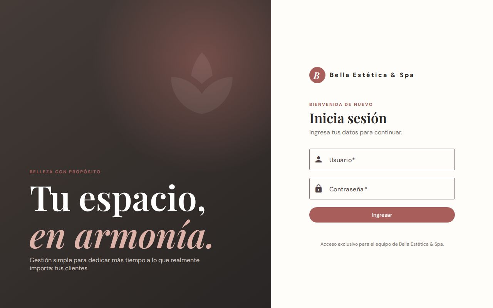
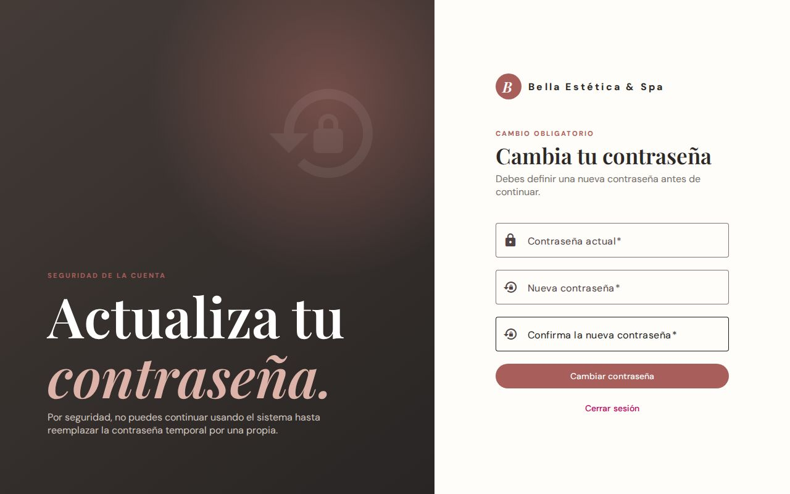
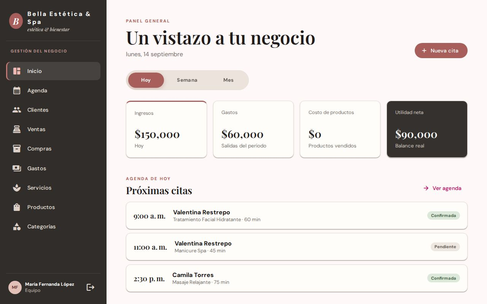
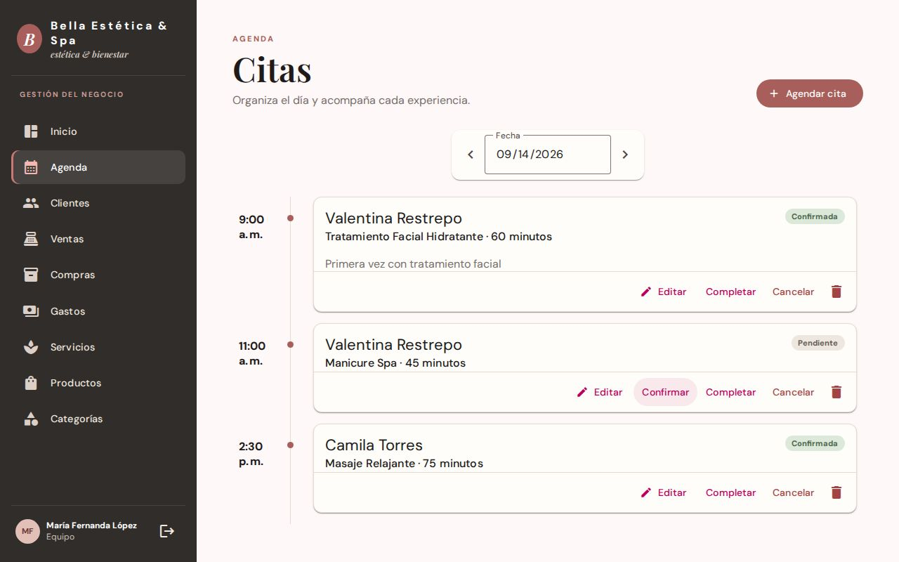
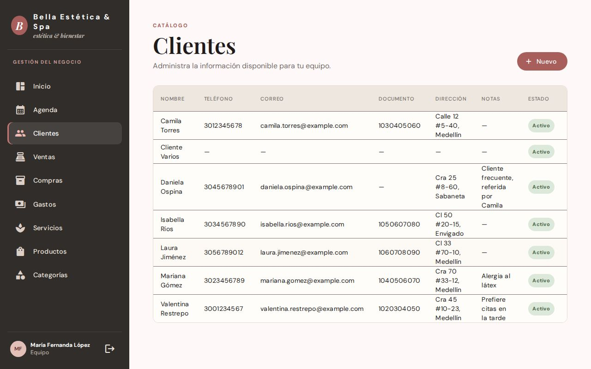
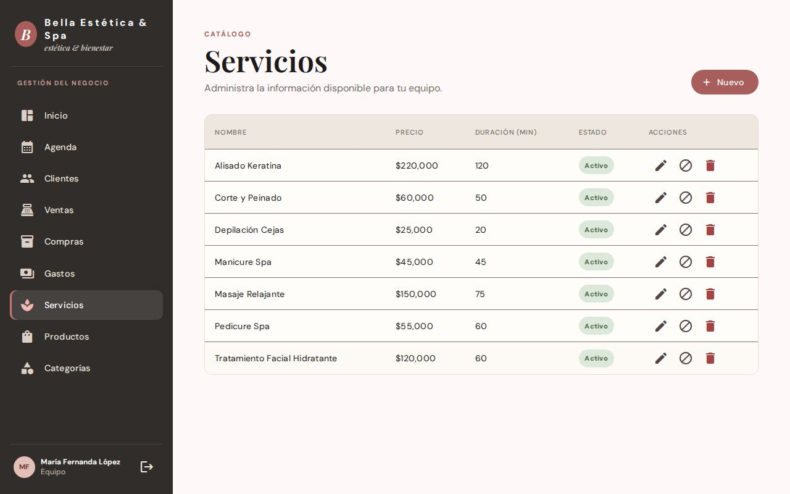
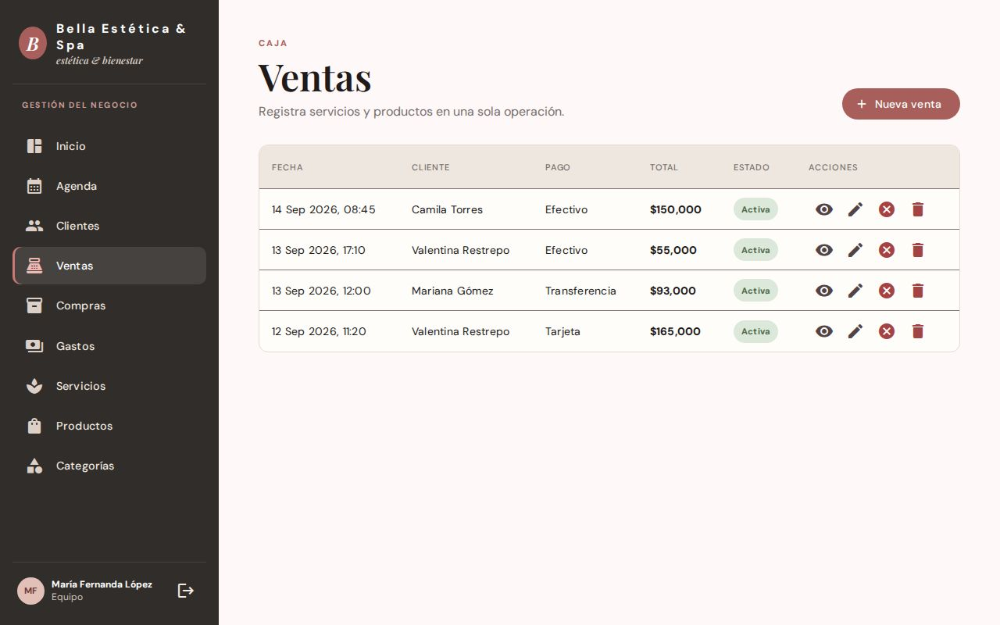
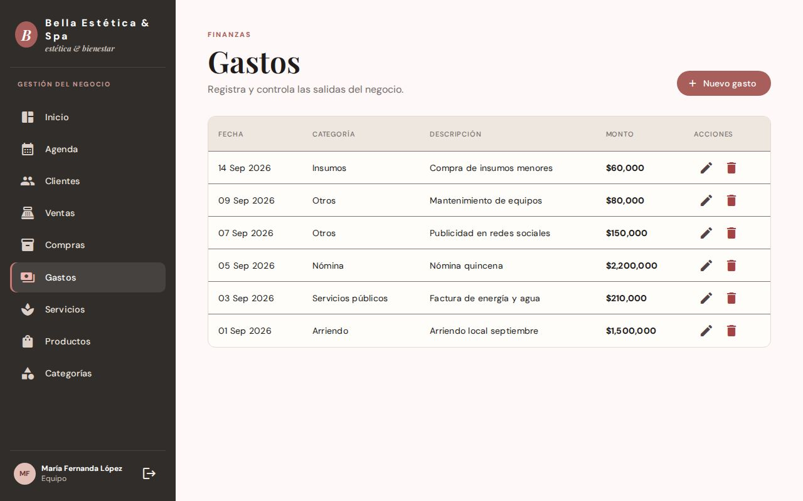
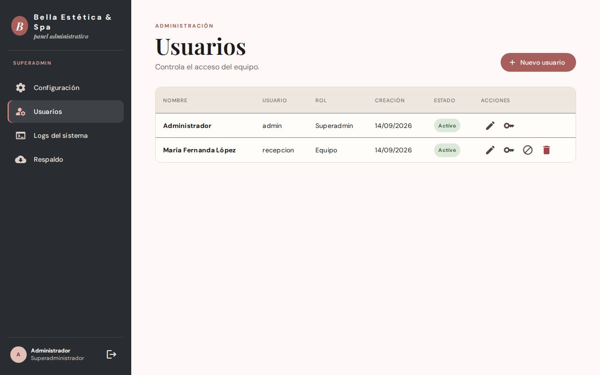
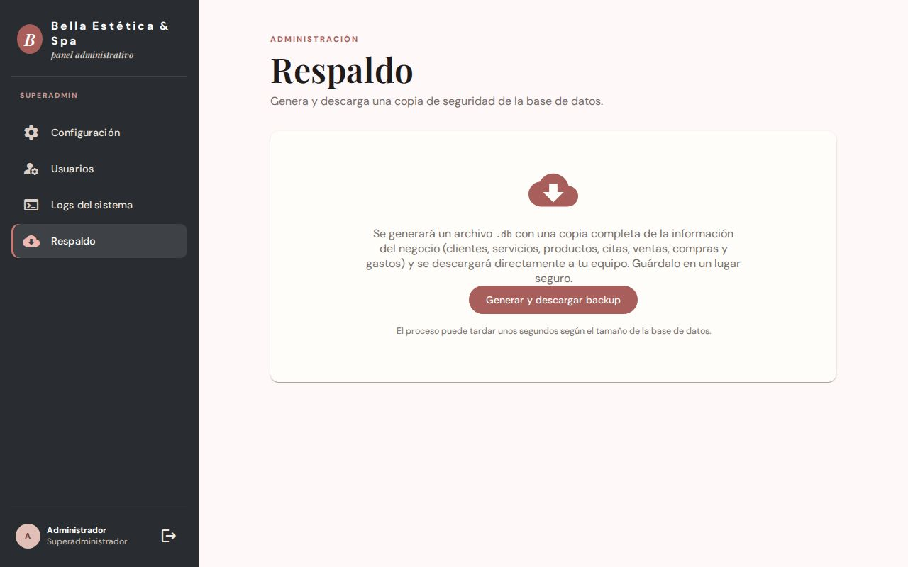

Estética
Sistema de gestión integral para un centro de estética
Caso de estudio de una aplicación full stack real: agenda de citas, clientes, servicios, productos, ventas, compras y gastos en un solo lugar, con autenticación segura y roles diferenciados para el equipo y para la administración del negocio.
Contexto y objetivo
Estética nació de un problema muy concreto de un negocio pequeño: la agenda de citas, el control de clientes, el inventario de productos y las cuentas del mes vivían repartidos entre un cuaderno, una hoja de cálculo y la memoria de quien atendía el mostrador. La construí como un sistema único donde agendar una cita, registrar una venta o revisar cuánto se gastó en el mes toma segundos en lugar de reconstruirse a mano cada vez.
Es una aplicación de código completo (no un mockup): autenticación real con cookies
HttpOnly, cambio de contraseña obligatorio en el primer ingreso, dos roles con
vistas distintas, una base de datos con migraciones versionadas y una suite de pruebas que
cubre la lógica de negocio.
Qué hace
- Panel general: ingresos, gastos, costo de productos vendidos y utilidad neta del día, la semana o el mes, con la agenda de próximas citas a la vista.
- Agenda de citas: vista de línea de tiempo por día, con estados (pendiente, confirmada, completada, cancelada) y acciones rápidas para confirmar o completar una cita sin salir de la vista.
- Catálogos de clientes, servicios y productos: CRUD completo con control de estado (activo/inactivo) y, en productos, seguimiento de stock y costo promedio.
- Ventas: una sola operación combina productos y servicios, descuenta stock automáticamente y calcula el costo real vendido para el panel de utilidad.
- Compras y gastos: registro de compras a proveedores que repone stock, y control de gastos por categoría (arriendo, nómina, servicios públicos, etc.).
- Administración (solo SuperAdmin): nombre del negocio, gestión de usuarios del equipo, visor de logs del sistema y descarga de un respaldo completo de la base de datos con un clic.
Seguridad
La sesión y las credenciales se tratan como lo haría una aplicación en producción, no como un ejercicio académico:
- Sesión por cookie
HttpOnly, revalidada contra la base de datos en cada request: si el usuario se desactiva o cambia su contraseña en otra pestaña, la sesión actual se cierra automáticamente. - Protección CSRF (
GET /api/v1/auth/csrf, headerX-XSRF-TOKEN) exigida en todo método mutador bajo/api. - Rate limiting por IP (5 intentos por minuto) en login y en cambio de contraseña, para mitigar fuerza bruta.
- Contraseñas con Argon2id (memory-hard, resistente a fuerza bruta) en lugar de un hash rápido tipo SHA-256.
- Contraseña temporal obligatoria: tanto el usuario administrador inicial como cualquier cuenta reseteada por un SuperAdmin quedan forzadas a definir su propia contraseña antes de poder usar el resto de la aplicación.
Arquitectura técnica
Backend y frontend viven en el mismo repositorio: ASP.NET Core sirve la API y, en producción,
el build ya compilado de Angular; en desarrollo, Microsoft.AspNetCore.SpaProxy
reenvía las peticiones al servidor de Angular para tener recarga en caliente en ambos lados
con un solo dotnet run.
- Datos con Dapper, no Entity Framework: el esquema vive en archivos
Data/Migrations/*.sqlversionados y registrados en una tablaSchemaMigrations; al arrancar, el backend aplica en orden cualquier migración pendiente, tanto en una base nueva como en una ya existente. - Roles a nivel de guard de ruta: el mismo layout de Angular cambia su navegación entre la vista operativa (agenda, clientes, ventas...) y la vista SuperAdmin (configuración, usuarios, logs, respaldo) según la sesión — sin duplicar el shell de la aplicación.
- Caché de lecturas con FusionCache: datos como la configuración del negocio se sirven desde caché para no golpear la base en cada request; el matiz honesto es que solo se invalida cuando el cambio pasa por la propia API, así que una edición hecha directo en la base de datos no se refleja hasta que la caché expira.
- CI: GitHub Actions corre build, tests, lint y build de producción del frontend en cada push y pull request.
Pruebas y validación
Antes de tomar las capturas de este caso de estudio, cloné el repositorio en un entorno limpio, instalé el SDK de .NET 10 y Node 24, y verifiqué que el proyecto compila y pasa sus pruebas sin intervención manual:
dotnet build— compila sin advertencias ni errores.dotnet test— 35 pruebas, 0 fallidas (xUnit), cubriendo servicios de negocio y utilidades comunes.npm run lint— sin problemas.npm test— 40 pruebas, 0 fallidas (Vitest) sobre guards, servicios y componentes del frontend.npm run build— genera el build de producción de Angular sin errores.- Flujo end-to-end real, sin mocks: sembré datos de ejemplo, completé el cambio de contraseña obligatorio, creé un usuario operativo adicional desde el panel de administración y recorrí cada pantalla como ambos roles — SuperAdmin y equipo — para las capturas de abajo.
Capturas de pantalla
Recorrido por la aplicación: desde el primer inicio de sesión hasta el panel de administración.










Mi rol y aprendizajes
Diseñé y construí toda la aplicación: el modelo de datos y sus migraciones, la API en ASP.NET Core, el frontend en Angular con componentes standalone y signals, la separación de roles, la seguridad de la sesión y la suite de pruebas de ambos lados.
El aprendizaje más reutilizable fue resolver la separación de roles a nivel de
route guards en lugar de esconder u ocultar botones en la interfaz: un
operationalGuard y un superAdminGuard deciden qué rutas puede
activar cada sesión, y el propio layout cambia su navegación según cuál se cumplió — así el
control de acceso vive en un solo lugar y no se repite pantalla por pantalla.
¿Quieres conocer más detalles técnicos de este proyecto? Escríbeme →